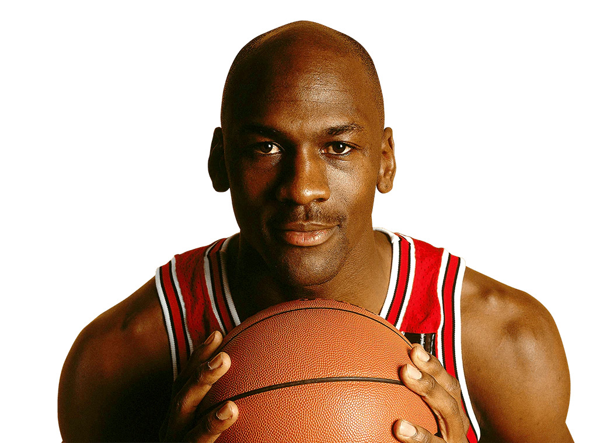
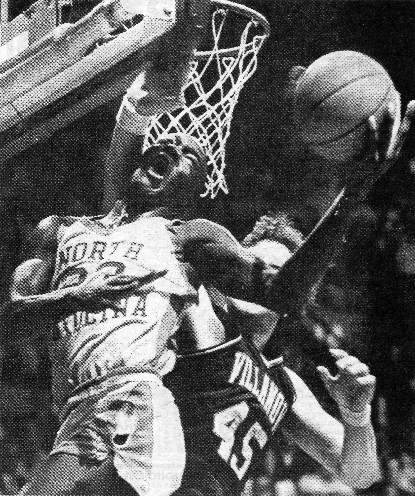
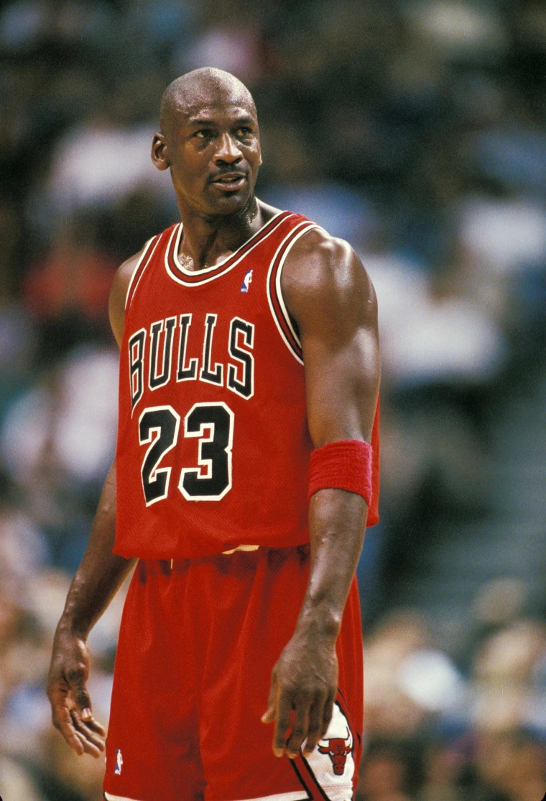

Michael Jordan
 American basketball player Michael Jordan led the Chicago Bulls to six National Basketball Association(NBA) championships (1991–93, 1996–98). He was named the NBA’s Most Valuable Player (MVP) five times (1988, 1991, 1992, 1996, 1998) and was also named Defensive Player of the Year in 1988.
Early life
 Jordan was born at Cumberland Hospital in Fort Greene, Brooklyn, New York City, on February 17, 1963, the son of bank employee Deloris (née Peoples) and equipment supervisor James R. Jordan Sr. In 1968, he moved with his family to Wilmington, North Carolina. Jordan attended Emsley A. Laney High School in Wilmington, where he highlighted his athletic career by playing basketball, baseball, and football. He tried out for the basketball varsity team during his sophomore year; at 5 feet 11 inches (1.80 m), he was deemed too short to play at that level. His taller friend Harvest Leroy Smith was the only sophomore to make the team.
Motivated to prove his worth, Jordan became the star of Laney's junior varsity team, and tallied some 40-point games. The following summer, he grew four inches (10 cm) and trained rigorously. Upon earning a spot on the varsity roster, Jordan averaged more than 25 points per game (ppg) over his final two seasons of high school play. As a senior, he was selected to play in the 1981 McDonald's All-American Game and scored 30 points, after averaging 27 ppg, 12 rebounds (rpg), and six assists per game (apg) for the season. Jordan was recruited by numerous college basketball programs, including Duke, North Carolina, South Carolina, Syracuse, and Virginia. In 1981, he accepted a basketball scholarship to the University of North Carolina at Chapel Hill, where he majored in cultural geography. More Photos
Professional career
 In 1984 Jordan was drafted by the Chicago Bulls. In his first season (1984–85) as a professional, he led the league in scoring and was named Rookie of the Year; after missing most of the following season with a broken foot, he returned to lead the NBA in scoring for seven consecutive seasons, averaging about 33 points per game. He was only the second player (after Wilt Chamberlain) to score 3,000 points in a single season (1986–87). Jordan was named the NBA’s Most Valuable Player (MVP) five times (1988, 1991, 1992, 1996, 1998) and was also named Defensive Player of the Year in 1988. In October 1993, after leading the Bulls to their third consecutive championship, Jordan retired briefly and pursued a career in professional baseball. He returned to basketball in March 1995. In the 1995–96 season Jordan led the Bulls to a 72–10 regular season record, the best in the history of the NBA (broken in 2015–16 by the Golden State Warriors). From 1996 to 1998 the Jordan-led Bulls again won three championships in a row, and each time Jordan was named MVP of the NBA finals. After the 1997–98 season Jordan retired again. More Photos
Awards and honors
NBA

- Six-time NBA champion – 1991, 1992, 1993, 1996, 1997, 1998
- Six-time NBA Finals MVP – 1991, 1992, 1993, 1996, 1997, 1998
- Five-time NBA MVP – 1988, 1991, 1992, 1996, 1998
- NBA Defensive Player of the Year – 1987–88
- NBA Rookie of the Year – 1984–85
- 10-time NBA scoring leader – 1987–1993, 1996–1998
- Three-time NBA steals leader – 1988, 1990, 1993
- 14-time NBA All-Star – 1985–1993, 1996–1998, 2002, 2003
- Three-time NBA All-Star Game MVP – 1988, 1996, 1998
- 10-time All-NBA First Team – 1987–1993, 1996–1998
- One-time All-NBA Second Team – 1985
- Nine-time NBA All-Defensive First Team – 1988–1993, 1996–1998
- NBA All-Rookie First Team – 1985
- Two-time NBA Slam Dunk Contest champion – 1987, 1988
- Two-time IBM Award winner – 1985, 1989
- Named one of the 50 Greatest Players in NBA History in 1996
- Selected on the NBA 75th Anniversary Team in 2021
- No. 23 retired by the Chicago Bulls
- No. 23 retired by the Miami Heat
USA Basketball

- Two-time Olympic gold medal winner – 1984, 1992
- Tournament of the Americas gold medal winner – 1992
- Pan American Games gold medal winner – 1983